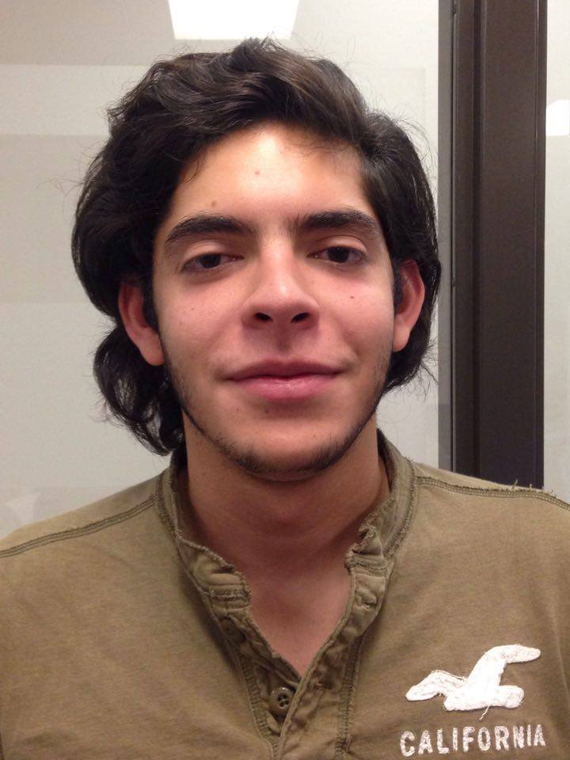
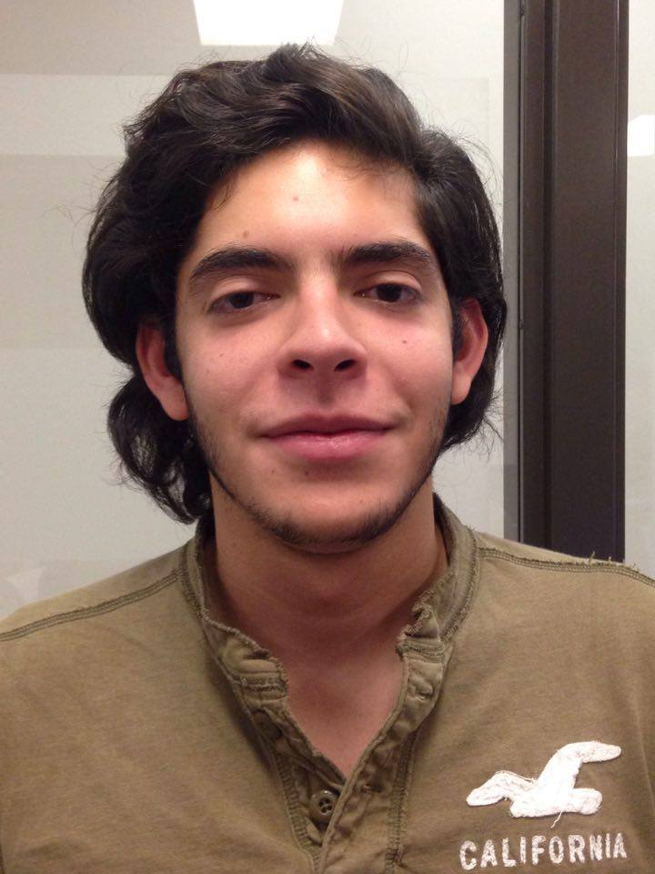
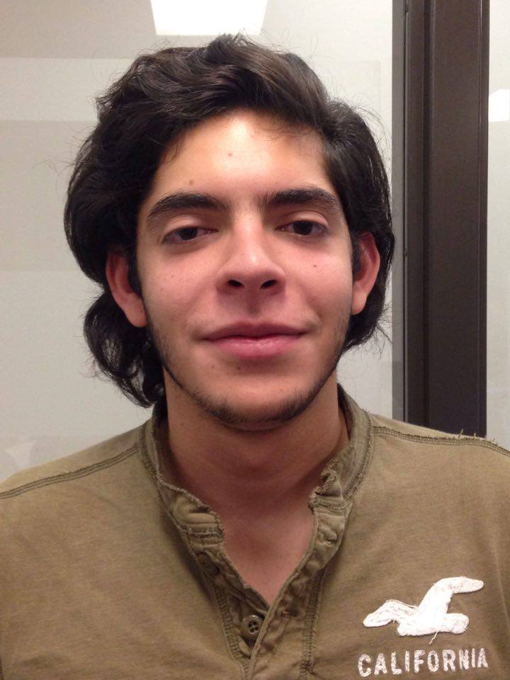

Chantal Tseung is an optimistic and weird first year software engineering student! She loves problem solving questions that require logic and "thinking outside the box" to solve. She has also created many video games that showcase her skill in the programming field.
Tyler Tsang likes a lot of sweets and bubble tea and also likes to play games, practice guitar and sleep. He's a software engineer at uOttawa.
Sherry Wang is a first year student studying software engineering at the University of Ottawa. She enjoys spending her free time eating and coding.
Uri Trejo has lived in Mexico City for 16 years, and moved to Ottawa, Canada in 2015. After graduating from a french high school, he is now in his first year at the University of Ottawa pursuing a degree in software engineering.
Chris Trottier enjoys meeting new people and finding ways to help them have an uplifting experience

| Chantal Tseung is an optimistic and weird first year software engineering student! She loves problem solving questions that require logic and "thinking outside the box" to solve. She has also created many video games that showcase her skill in the programming field. | Tyler Tsang likes a lot of sweets and bubble tea and also likes to play games, practice guitar and sleep. He's a software engineer at uOttawa. | Sherry Wang is a first year student studying software engineering at the University of Ottawa. She enjoys spending her free time eating and coding. | Uri Trejo has lived in Mexico City for 16 years, and moved to Ottawa, Canada in 2015. After graduating from a french high school, he is now in his first year at the University of Ottawa pursuing a degree in software engineering. | Chris Trottier enjoys meeting new people and finding ways to help them have an uplifting experience |